) in the Content List. To view the objects that are part of a Workflow Package, click on the icon (
) in the Content List. To view the objects that are part of a Workflow Package, click on the icon ( ) for the appropriate Workflow name.
) for the appropriate Workflow name. When a Workflow process is started, a Workflow Package is created. This is what is routed to the participants of the Workflow. The Workflow Package contains the Routing Slip, the Workflow objects (documents, Forms, etc.), optional references, and administrative controls. The Workflow Package can be viewed by authorized users for running and completed Workflows.
Authorized users have access to the Routing Slip in the Workflow Package by clicking on the Workflow Package Tab. This page displays a Routing Slip that shows the progress of the Workflow process. It displays all users that are participating in this Workflow and how far it has progressed in the routing process, including all iterations of a step.
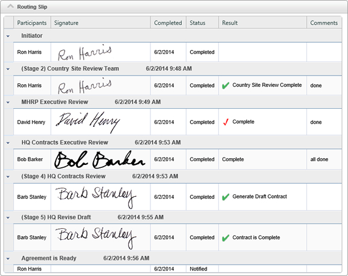
This Routing Slip is very similar to the Routing Slip control that is displayed on Forms.
Administrators can choose to require and display comments on the Routing Slip. Checking the “Prompt for Signature Comments” checkbox in the Advanced Options tab of a User control will automatically put a Signature Comments control at the bottom of the Form for users completing that task.
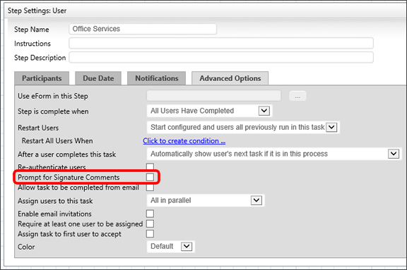
Simply checking this checkbox won't require that the user enter comments, it will only prompt them to. To require that the user enter comments, check the “Require Signature Comments” checkbox in the Options tab of Branch settings. This way, you can configure it such that users only need enter comments when one branch is chosen and not another.
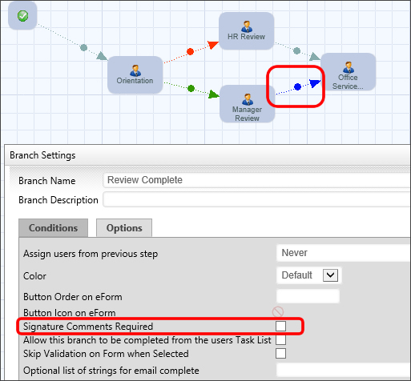
You can also prompt users to enter signature comments in a Process Timeline task. See the Process Timeline section for instructions.
Only authorized users will see this button displayed. The user must have Modify permission for the running Workflow or have Modify Children permission for the Workflow definition. The Administration button in the Workflow Package allows users to modify the running Workflow. From this screen, authorized users can change the running Workflow by adding users to a step, removing them from a step, or jumping to a new step.
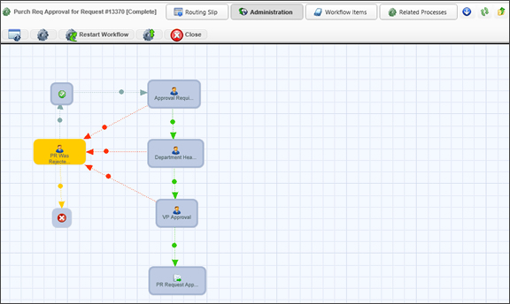
From the Graphical Administration screen, you can double-click on a task to open the administration screen for that task.
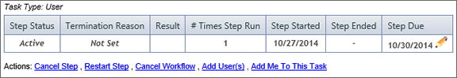
You have a number of options to choose when administering a task.
|
Option |
Result |
|---|---|
|
Cancel Step |
Cancels this step in the Workflow. |
|
Restart Step |
Restarts this step in the Workflow. User, Wait, Custom Task, or Script steps may all be restarted. |
|
Cancel Workflow |
Cancels the entire running Workflow instance. |
|
Add User(s) |
Adds additional users to the Workflow Step. |
|
Add Me to This Task |
Adds you to the Workflow Step as a participant. |
|
Cancel User |
Cancels the user's participation in the task. |
|
Complete User Task |
Sets the user's task as complete. |
|
Remove User |
Remove the user from the task. |
|
Reassign User |
Assign a different user to the task. |
The Workflow Items page is what is presented to users that are participating in a Workflow Step. This page displays all of the objects being routed in this Workflow (e.g. documents, Forms, etc.). A Workflow Package can contain multiple objects of any type. If the Form has an attach button, users in that step will be able to add objects to the Workflow Package. Each new object added is added to the Workflow Items page. If a user has Delete permission to the running Workflow they will be able to remove objects from the Workflow package.
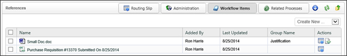
This page in the Workflow Package will only appear if the Workflow process is related to any other Workflow processes. If this Workflow is a parent or child process of another Workflow then the Related Workflows button is automatically displayed. This displays the relationship between the Workflows allowing users to click on the different Workflow entries and view the status (i.e. Workflow Package) for each of the other Workflows.
Workflow definitions are stored in the Content List just like any other object in the database. When a Workflow is started, an entry will be created under the Workflow definition in the Content List as a child object. The entry will remain there even after the Workflow has completed. To view the running and completed Workflows for a Workflow definition, users can click on the “Active Workflows” or Complete Workflows” icons next to the Workflow definition name in the Content List.
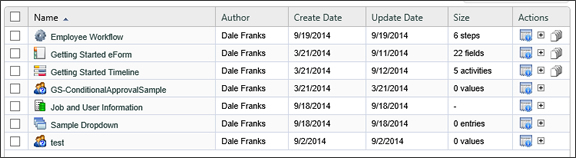
If users have View Children permission to the Workflow definition, they will automatically be given View permission to any running and completed Workflows for that definition. The running and completed Workflows are displayed in the Content List swing status, what step is running and the user that initiated the Workflow. Users can view the Workflow Package for any of the running or completed Workflows by clicking on the name or the icon () in the Content List. To view the objects that are part of a Workflow Package, click on the icon () for the appropriate Workflow name.
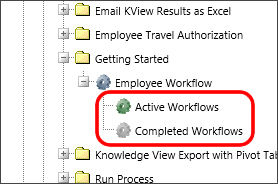
Running and completed Workflows can also be made available to users through a Knowledge View. For example, if users have a need to see only certain types of running Workflows, a Knowledge View filter can show a list of the Workflows making the actual location of them in the Content List transparent.
A running Workflow can allow users to add new objects (e.g. documents, Forms). If a user has an attach button on a Form they will be able to add new objects to the running Workflow.
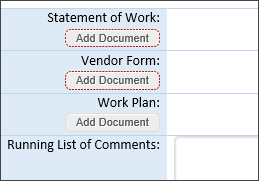
When a new document is added under the Workflow Package it will only be contained under the Workflow. The document won't exist anywhere else in the Content List.
When a reference (e.g. shortcut) to an existing object in the database is added, only a reference to the object will be created in the Workflow. A reference, or shortcut, is a symbolic link to the original object. Any changes made to the reference will also update the object it is pointing to, except in the case of a Form. If a reference to a Form is added to the running Workflow, an instance of the Form will be created and placed under the Workflow Items button.
The Process Director Workflow engine supports the ability to automatically start Workflows for certain document events within a folder. Automatic Workflow definitions can be specified for any folder. A Workflow definition can be associated with one of the following document actions:
If one of these conditions is met, the appropriate Workflow will automatically be started against that document.
To set Workflows to start automatically, click on the “properties” icon for the folder to open the folder's properties screen.
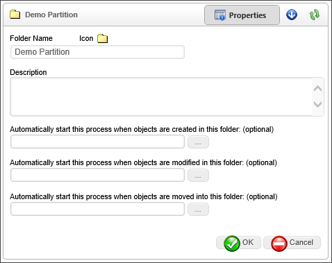
Use the Object Picker to select a Workflow from the Content List that you want to start under the given conditions.
A Workflow can be started by selecting one or more objects in the Content List and choosing the Start Workflow link. This will display a popup with a list of Workflow definitions the user has permission to start. Changes to the Workflow definition will affect all running Workflows.
Task Lists are fundamental to Workflow management systems. The Process Director Workflow engine supports an integrated Task List that provides each user with a list of their assigned tasks, according to priority and due date. As a user completes an assigned task, the item is automatically removed from their Task List.
Tasks List Knowledge Views with a “Complete Task” column allow the user to complete the task from the Task List. A column will appear in the Task List with icons representing every option the user can choose. Clicking the icon will complete the user’s task.
A running Workflow will temporarily override the permissions for any object (document, Form, etc.) contained within it, giving the user the necessary access to perform the requested task. When users are assigned to a Workflow task, they will automatically be given Modify permission to the objects until their task is completed. This prevents the object permissions from effecting running Workflows.
When a Form is attached to a Workflow (via the Form Actions) it creates a new form data instance in the Workflow package. The Workflow package may contain multiple forms attached to it. When using multiple forms in a Workflow package, you can control which form is the default that will be displayed to the user when they click on the entry in their Task List or their email notification.
In Process Director, the Form is the viewer which controls how information is displayed to the user and the form instance contains the actual form data. This means that you can use different Forms to view the same form data. This is controlled through the Workflow processing, allowing you to present a user with a different Form, but still have it associated with and displaying the same form instance data.
When multiple form instances are attached to a Workflow package, you can select the instance that should be used as the current or default form instance for the Workflow. This is performed in the Form Actions Workflow task. If a current form instance is not set using this task, the first form instance that was attached to the Workflow will remain the current form instance. In the Form Actions task, you can choose the default form instance by selecting the actual Form Definition that was used to create or view the form data and check the “Set this as the default Form Instance for the Workflow” box. The running Workflow will determine the appropriate form instance to use based on the “Set this as the default Form Instance for the Workflow Form Instance” field below.
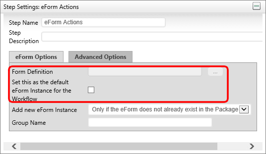
Workflows can be run manually, or scheduled to perform an automatic actions. To schedule these Workflows, a web page (a Web Service web page) is executed to run a specific Workflow definition.
Ensure you have enabled Web Services on the Installation Settings page. You can optionally enable security restrictions and authentication. If you pass credentials on the URL, you'll need to set fWebServiceAllowCredentialsURL to true in the custom vars file.
Execute the following URL from a browser on the server that has Process Director:
http://localhost/services/wsWorkflow.asmx/Run?wfid=WFID&bpUserid=USERID&bpPassword=PASSWORD
 Be advised that using the bpUSERID or bpPassword parameter requires sending the User ID and Password in clear text, so be mindful of the security implications of transmitting these values.
Be advised that using the bpUSERID or bpPassword parameter requires sending the User ID and Password in clear text, so be mindful of the security implications of transmitting these values.
The wsWorkflow.asmx command can take the following parameters on the QueryString URL:
You may want to automatically schedule the Workflow to run at regular intervals (for example, every night at midnight). To do this, use the bputil.exe utility. This utility enables you to schedule and test commands executed on a regular basis.
Do not schedule IEXPLORE.EXE because the web browser will never close. Rather, use the bputil.exe command to run the web page. For example, enter this command in the “Run” dialog box to schedule the synchronization:
"PATH\bputil.exe" SU http://localhost/services/wsWorkflow.asmx/Run?wfid=WFID&bpUserid=USERID&bpPassword=PASSWORD
Be advised that using the bpUSERID or bpPassword parameter requires sending the User ID and Password in clear text, so be mindful of the security implications of transmitting these values.
(Where PATH is the installation directory for Process Director, e.g. c:\Program Files\BP Logix\Process Director\). Enter the appropriate credentials in the Windows Scheduler when prompted. Use the “Schedule” tab to set the times to run the command. Consult the Microsoft help for more information on this utility.